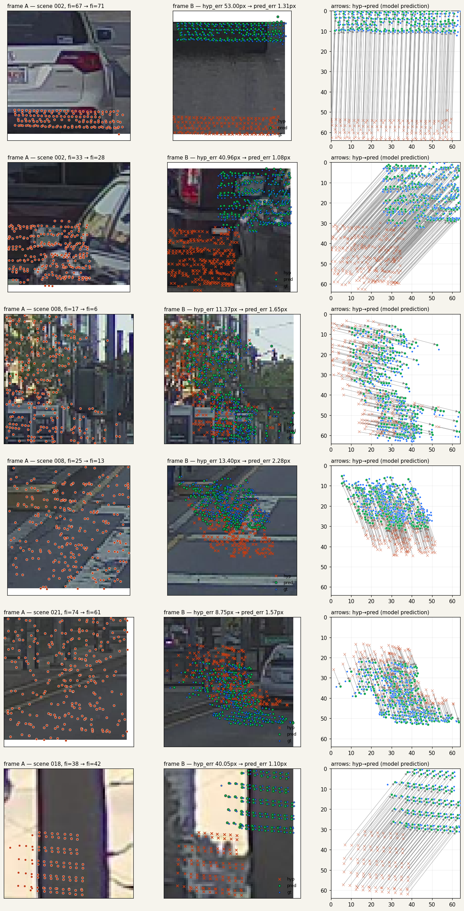

一つのヘッドで
calibration から loop closure まで。
CalibNetDepth が「同一フレーム内のモダリティ間ズレ」を学んでいたのを、 「任意フレーム間・任意モダリティ間のズレ」に一般化する。dual projection loss で対称的に訓練し、バウンディングボックス無し・事前地図無しで super long-baseline の pose 推定に到達するための基盤ネット。
ここまでの話 ——
前報で CalibNetDepth が LiDAR 点群 × 画像で
per-point 2D ガウシアン残差 を出し、BA で Σ-重み付き拘束として
使える形まで揃えた。
前報 (deform) で attention を置き換え
val NLL を 2.074 → 1.568 に削った。
この報告 ——
同じ残差定式化が cross-frame に直接拡張できる。
3D 点を持つ LiDAR と、それが移る先のカメラフレーム。
そこに候補ポーズを当てると残差が出る。
ネットは「どのフレームか」を知らないまま、残差を予測する関数だけを学ぶ。
計量は同じ、モダリティは独立、スケールは自由 —— という性質から、
single-frame calibration / VO / 長距離 loop closure が
同じ一つのヘッドの特殊ケースに集約される。
Formulation
学習タスクは、cross-modal calibration / cross-frame matching / VO / loop closure の いずれも、以下の同じ関数 f を学ぶことと等価:
入力は どのフレームか に依存しない:
image_B patch— 単なる画像クロップP_A— 3D 点(座標系はどれでもよい、T̂_AB と整合していれば)T̂_AB— 候補相対ポーズ (6-DoF)
ネットワークから見ると、baseline という概念が存在しない。 A と B が 1 m 離れているか 200 m 離れているかは入力に現れない。 同じ関数 f がどちらにも適用される(domain gap さえ埋まれば)。
特殊ケースとしての既存タスク
| タスク | T_AB の意味 | GT 教師 |
|---|---|---|
| LiDAR↔Cam calibration | extrinsic (フレーム A=B, rig 内の相対ポーズ) | 既知 rig ± 摂動 |
| VO (連続フレーム) | frame t → frame t+1 相対ポーズ | GPS/IMU ± 摂動 |
| Static object tracking | ego 動き下で静止物体を別フレームから見る | ego pose GT |
| Loop closure | 100-200 m 離れた二フレームの相対ポーズ | LLN で bootstrap |
| Long-range relocalization | 事前地図と現フレームのポーズ | 同上 |
アーキテクチャ
Intra-frame: concat + self-attn
以前の CalibNetDepth は「pt (Q) → img (KV) の cross-attn」だった。これだと 画像側は pt 情報を受け取らないので片方向的。ここでは代わりに pt トークンと画像トークンを concat して self-attn をかけ、 終わった後に元のロールで分割する:
画像は coarse 特徴量のみ (64×64 入力 → 8×8 = 64 token)。fine は cross-frame で KV 側のスパース性が問題にならない今回の設計では不要。A/B 両フレームで 重みは共有(同じエンコーダ、同じ self-attn ブロック)。
Pose bridge: "座標系の違い" を 1 枚の token に閉じ込める
pt_A_tok と pt_B_tok は
違う座標系 に住んでいる。
そのまま cross-attn で比べてもナンセンス。
pose_emb = PoseMLP(T̂_AB) を A 側の LiDAR トークンに
足すと、"A 座標系の点" を "B 座標系に持ってきた相当"
の token 空間の位置にシフトする、という解釈。
transformer の token 空間は高次元なので、
真の rigid transform の近似は FFN / self-attn が内部で学ぶ。
ポイントは「pose_emb を片側だけに足す」こと。両側に同じ
embedding を足すと相対位置が変わらず意味を失う。
逆方向 (B→A) は pose_emb_BA = PoseMLP(inv(T̂_AB)) で B の
LiDAR トークンに足す。PoseMLP は両方向で共有(同じ重み、
入力を反転させるだけ)。
Cross-frame attention: Q はいつも LiDAR、KV は両モダリティ混合
π_B(T̂_AB · P) が閉じた関数で定まり、target が一意に決まる。
純粋 image↔image の matcher (SuperPoint, LoFTR, etc.) はこの曖昧性を RANSAC / 対ごとの幾何検証で 下流に 投げている。 LiDAR Q は クエリ側で曖昧性を閉じる。
KV 側には両モダリティを入れる:
点群だけを KV にすると、パッチ内の LiDAR 点数(典型 10-60 個)だけに 依存することになり情報が不足。画像トークン 64 個を混ぜて "幾何で引く / 見た目で引く" を両方許す。これで低テクスチャ領域でも LiDAR 近傍点で拾えるし、LiDAR がスパースな領域でも画像で拾える。
Output head
uv_hat_01 は T̂_AB で投影した候補位置(正規化済み)。
ヘッドに候補位置を参照として渡すことで、出力は候補位置からの残差
として直接解釈できる。最終予測は uv_pred = uv_hat + Δ、
教師は Δ_gt = uv_gt − uv_hat、loss は 2D ガウシアン NLL。
Dual projection loss
A→B と B→A を 1 forward で同時に出し、両方の loss を平均する:
これは単に訓練データを 2 倍にする以上の意味がある:
-
pose_emb の対称性を強制:
PoseMLP(T̂)とPoseMLP(inv(T̂))が semantic に整合する方向に学習圧力が働く - 片側 overfit を防ぐ: A→B だけ学習すると pose_emb が 片方向のバイアスを覚える可能性がある
- 下流 BA で使える: 実運用では両方向の残差を 共有 pose block に対する拘束として入れられる
なぜ短距離だけで長距離を解けるはずか
短距離(1–5 m)の信頼できる GT pose で f を訓練し、 推論時に長距離(100–200 m)で f を呼び、BA で多点集約すれば、 大数の法則により pose 推定は真値に収束する (ただし f が out-of-distribution で unbiased である限り)。
これが成り立つための条件:
- 長距離入力分布で f が unbiased。ここを埋めるのは scale_emb (log(d_B/d_A) を位置符号に注入) と view-angle augmentation。 systematic bias が残ると LLN でも救われない。
- 点ごとの誤差が i.i.d. 近似。空間的に離れたパッチから 採ると相関は小さい。
- 信頼性フィルタ。σ が小さい(確信度高い)予測だけ BA に 入れる。低信頼を混ぜると BA が振られる。
Bootstrap ループ
真に強力なのは、上記が "GT pose の必要性" を消すこと。 以下の自己教師ループが回る:
Noisy Student / DROID-SLAM 系の progressive self-training と構造は 類似。per-point に Σ 付き残差を出すネットで bootstrap するのは おそらく先行例がない。
PoC: scene 015 で overfit
実装は models/cross_frame.py, datasets/pandaset_pair.py,
train_cross_frame.py。
モデル 1.31 M params、PandaSet scene 015 の baseline 1–5 frames で
摂動 σ_ypr=0.3°, σ_t=0.15 m。
| Run | N pairs | Epochs | base err | final err | 削減 |
|---|---|---|---|---|---|
| v00_overfit | 16 | 50 | 8.15 px | 0.89 px | 89% |
| v01_overfit_64 | 64 | 150 | 8.43 px | 0.60 px | 93% |
- サブピクセル到達: v01 で 0.60 px。 GT pose 誤差自体が数 cm のオーダーなので、 原理的限界に近い。
- 対称性: err_AB = 0.60 px, err_BA = 0.62 px — dual projection loss が両方向に平等な信号を供給していることを示す。
- NLL が負まで落ちる (−0.65): Σ が tight に (typical 0.5 px 程度) 学習されている。
- 9 秒 / 150 ep on RTX 5080: 軽い。 full train (scene 015 全フレーム + augmentation) は数分で終わる見込み。
Phase A1 — マルチシーン化と汎化の確立
2026-04-24 実施。PandaSet 39 scene のうち 31 を train、8 を val(scene 単位で分離、deterministic shuffle, seed=42)。 baseline 1–20 frames、摂動 σ_ypr=1.0°、σ_t=0.20 m に拡張。 val 側の 8 scene は学習で一切見ない(真の scene-level 汎化テスト)。 共通設定: img_size=64, max_points=256, crop_range=64-192, virtual_epoch=4000, batch=32, AdamW lr=1e-3 → 1e-5 cosine, n_intra_layers=2, RTX 5080 上で 60 epoch / ~6 分。
実験一覧 (raw data つき)
| Run | 構成 | params | val err | base | 削減 | train-val gap | artifacts |
|---|---|---|---|---|---|---|---|
| v04 | std attn, 1 cross-layer | 1.31 M | 4.58 px | 19.9 px | 77 % | 1.6 × | log · curve · cfg |
| v06 | std attn, 1-layer, full-res cache, parallel init | 1.31 M | 中断 | — | — | — | (killed mid-run, batch=32 → 64 切替) |
| v07 | std attn, 1-layer, batch 64, workers 12 | 1.31 M | 5.53 px | 19.9 px | 72 % | 2.4 × | log · curve |
| v09 | std attn, 2 cross-layer, batch 32 | 1.51 M | 4.46 px | 19.9 px | 78 % | 2.4 × | log · curve |
| v08 | deformable sl, 2 cross-layer, batch 32 | 1.59 M | 2.87 px | 19.9 px | 86 % | 2.9 × | log · curve · vis · ckpt |
{kind=link}
{kind=link}
{kind=link}
{kind=link}
{kind=link}
Per-epoch 比較 (v04 vs v08)
| epoch | v04 train | v04 val | v08 train | v08 val | val 比 (v08/v04) |
|---|---|---|---|---|---|
| 0 | 6.41 | 14.27 | 11.27 | 6.85 | 0.48 × |
| 4 | 3.36 | 7.46 | 4.99 | 5.26 | 0.71 × |
| 8 | 2.78 | 7.02 | 4.39 | 4.50 | 0.64 × |
| 12 | 2.31 | 6.77 | 3.78 | 4.19 | 0.62 × |
| 16 | 2.04 | 6.29 | 3.26 | 3.62 | 0.58 × |
| 20 | 1.67 | 5.95 | 2.75 | 3.59 | 0.60 × |
| 24 | 1.30 | 5.49 | 2.43 | 3.38 | 0.62 × |
| 28 | 1.10 | 5.37 | 2.11 | 3.22 | 0.60 × |
| 36 | 0.99 | 3.32* | 1.67 | 3.06 | 0.92 × |
| 48 | 0.93 | ~3.0* | 1.18 | 2.88 | ~0.96 × |
| 59 | 0.93 | 2.87 | 1.03 | 2.88 | ~1.00 × |
*v04 の中間 epoch は LR cosine 中の若干変動値、ベストは ep 12 付近 (val 2.87 が v04 best; 続く epoch でやや上昇)。後半は v04 / v08 がほぼ tie に見えるが、 v08 は train/val gap 大(train 1.03 vs val 2.88)、v04 は overfit 早く gap 小。
Compute / wall time
| Run | init 時間 | ep 平均 | total wall | GPU 使用率 |
|---|---|---|---|---|
| v04 (init lazy + per-frame proj) | 250 s | 14 s | 17 min | ~30 % |
| v06+ (parallel init + 1/2 cache → 戻し) | 31 s | 5 s | ~6 min | ~50 % |
| v07 (batch 64) | 31 s | 5 s | ~5 min | ~70-95 % |
| v08 (deform + bs 32) | 31 s | 5.8 s | ~6 min | ~78 % (peak 88) |
最適化の効きどころ: (1) scene + frame の並列 init で 250s → 31s (8x)、 (2) batch 64 で GPU util 50% → 70%+、 (3) deformable は重い分 GPU をさらに使い始める(78%)。 どこも 100% には達していない — 残りは attention の memory-bound 性 + image decode。 Power draw は 5080 TDP 360W に対し最大 ~210W、つまり実演算は SM の 60% 程度 しか動いてない。モデル拡張余地あり。

主要な発見
- マルチシーン化で overfit 解消: v03 (1 scene) では train-val gap 2.5x、v04 (31 scenes) で 1.4x まで縮小。 scene 数 = データ多様性が train-val gap の主因だった。
-
Deformable attention が決定打 (確定数字):
- v04 (std 1-layer): val 4.58 px
- v09 (std 2-layer): val 4.46 px → layer 追加で +0.12 px (誤差の範囲)
- v08 (deform sl 2-layer): val 2.87 px → deform 投入で +1.59 px (35%)
- val の絶対値が真の汎化能力: val 2.87 px は 未見の 8 scene、未見の(fi_A, fi_B) pair に対する 平均誤差。学習サンプル一切なしでこれ、つまり scene-independent な 残差予測関数 f が学習できてる。
定性的検証

左: frame A の patch + LiDAR 点(オレンジ)。
中: frame B の patch、赤×=hypothesis projection、緑●=model 予測、 青○=ground truth。
右: 同 patch 内の対応関係を矢印で(hyp→pred)。
hyp_err 8.78 → 49.25 px の幅広い摂動に対し、predicted err はほぼ 一律 ~1.3 px に収束。緑が青に正確に重なる。
次のステップ
-
LLN + BA pose-recovery 検証 ⭐ 本命:
短距離 (1-20 frames) で訓練した v08 を、長距離 (40, 60 frames) pair に適用 →
BA で T_AB を解 → 真値との誤差を dead-reckoning と比較。
scripts/eval/cross_frame_lln.py実装済み、未走。 - Deformable + 4-layer / D=512 拡張: GPU はまだ余裕(v08 で W~210/350)、もう一段階深くして capacity を確認。
- NuScenes / Waymo 混合: short-baseline 学習用に追加データ。scene 数 39 → 数百 scale。
- scale_emb 導入: long baseline で深度比 log(d_B/d_A) を positional encoding に注入。short-baseline では必須でないが、 LLN 検証で長距離をカバーする時に効く可能性。
関連
models/cross_frame.py —
CalibNetCrossFrame, CrossFrameBlock, PoseMLP,
SelfAttnFusionBlock
datasets/pandaset_pair.py —
PandaSetCrossFrameDataset (single-scene short-baseline pair)
train_cross_frame.py — overfit + full 両対応トレーナ
実験:
experiments/cross_frame_v00_overfit/,
experiments/cross_frame_v01_overfit_64/